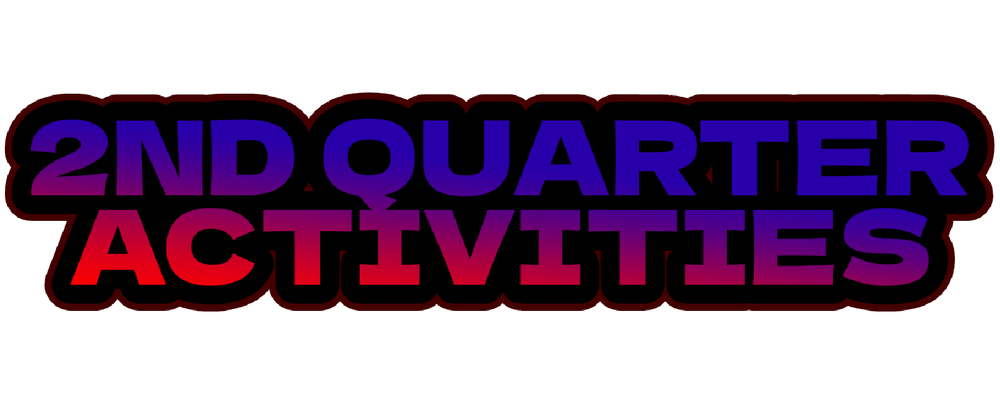

| MEDIA | DESCRIPTION |
|---|---|
 |
The Intramurals 2024, this was the parade to showcase our pride for our team colors. |
| An activity for AP Month highlighting historical figures and their contributions to society. This video showed support to our representative Dewi Nuqui. | |
| These are the representatives for Booklandia 2024. Arkin and Chanel. Booklandia was an activity to showcase the great land of books and fiction. I forgot which characters they are, but I was told they were "vampires." They are anime vampires. We are very proud of their hard work! | |
 |
This is an image and a video of our teacher's day. Before the event, we held an activity called "Mini-Teachers" which is us students replicating teachers. After that, we had our event, and this video, Arkin (yes, from the picture above) had his fun performance. |
 Family's Minus-one Family's Minus-one |
This is the practice for the upcoming VPOP on December 16. The video is practice in front of the I heart LPSCI sign. The Audio is the failed 'minus one' that we were planning to use and was discontinued. |